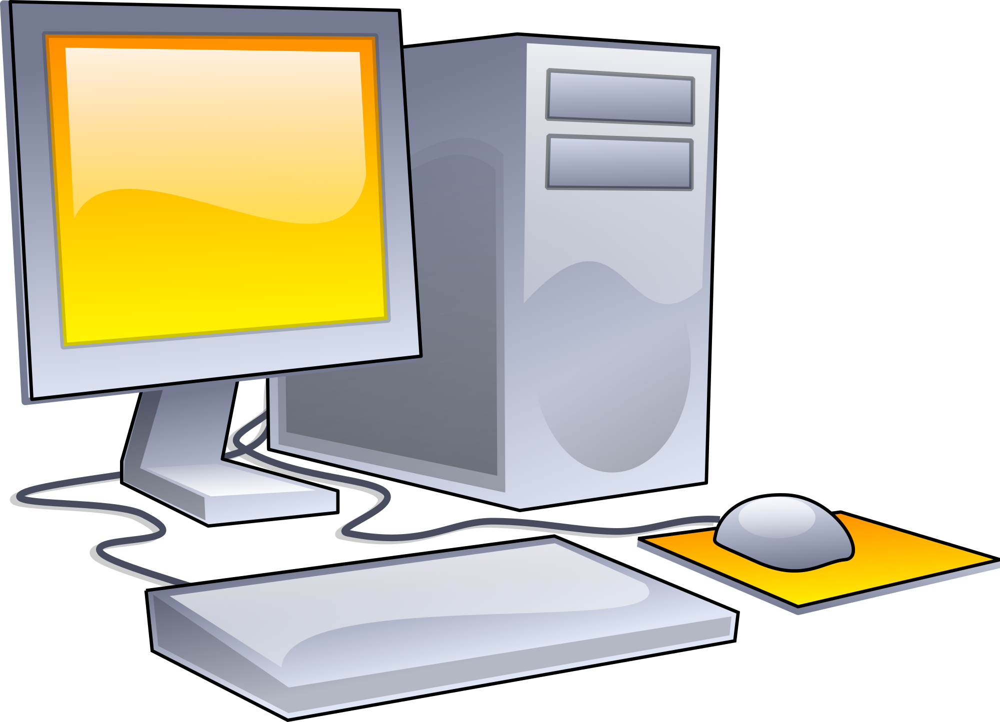

Een computer doorloopt vijf fases, de 1e invoer, de 2e gegevens, de 3e verwerking, de 4e opslag en de laatste uitvoer.
Stel je drukt een letter van je toetstenbord in, dan is het eerste wat er gebeurt invoer, want je drukt de letter in, vervolgens heeft je computer een gegeven, dat wordt verwerkt (omgezet naar een letter),
dan slaat de computer het op zodat de gegevens niet verloren kunnen gaan en als laatste wordt het uitgevoerdt, je ziet namelijk de letter op je computerscherm verschijnen.
Een processor is het brein van een computer, dat alle berekeningen en taken uitvoert.
De processor is verantwoordelijk voor het uitvoeren en coördineren van alle rekenkundige en logische bewerkingen die nodig zijn voor de werking van een computer.
(Berekeningen uitvoeren, instructies decoderen, gegevens verwerken en taken plannen en beheren.)
RAM (Random Acces Memory): Tijdelijk geheugen dat actief gebruikte gegevens bewaart maar deze verliest bij uitschakelen.
ROM (Read-Only Memory): Permanent geheugen met onveranderlijke instructies voor basisfuncties, blijft hetzelfde na uitschakelen.
Een "bus" in de informatica is een communicatiekanaal waarmee gegevens en signalen worden overgedragen tussen verschillende delen van een computer of elektronisch systeem.
Het stelt componenten in staat om informatie te delen en met elkaar te communiceren.

De von Neumann-architectuur bestaat uit:
Centrale Verwerkingseenheid (CPU): Voert berekeningen en instructies uit.
Geheugen: Opslagruimte voor programma's en gegevens.
Instructieset: Machinetaal instructies begrepen door de CPU.
Gegevensbus en Adresbus: Kanalen voor gegevensoverdracht tussen CPU en geheugen.
Een moederbord is het centrale circuitboard in een computer dat alle belangrijke componenten verbindt en laat samenwerken.
Een System-on-a-Chip (SoC) is een enkele geïntegreerde chip die alle belangrijke componenten bevat voor de werking van een elektronisch apparaat.
Permanent geheugen is een type computergeheugen waarin gegevens blijvend worden opgeslagen, zelfs wanneer de stroom wordt uitgeschakeld.
Randapparatuur zijn externe apparaten die worden aangesloten op een computer om extra functionaliteit te bieden, zoals printers, toetsenborden, en muizen.
Verbindingen (kabels/interfaces) zijn fysieke of draadloze middelen om elektronische apparaten met elkaar te verbinden en gegevens uit te wisselen, zoals USB-kabels of Wi-Fi.